Experimentations for Human-Drone Interfaces
Introduction
In (<span class="citation" tezza_andujar_2019"></span>), define Human-Drone Interaction (HDI) as a field of research that consists of understanding, designing and evaluating drone systems for use by humans, and in contact with humans. This field is similar to human-robot interaction (HRI), however, a drone’s unique characteristic to freely fly in a 3D space, and unprecedented shape makes human-drone interaction a research topic of its own. Researchers develop control modalities and better understand means of communicating with a drone.
Human-drone interaction is a broad research field, for instance, a researcher can design new drones’ shapes with friendly-like appearance, while another researcher can focus on designing new user interfaces that allow non-skilled pilots to accurately operate drones without extensive training.
In line with the thesis goal, we look at two types of smart systems that enhance the interactions between humans and drones. The first allows the human to pilot a drone through a gesture interface. The second looks to a virtual interface as a training ground for a real drone to avoid a virtual object. A distributed system is used to to communicate and coordinate these pipelines by passing messages to one another from any system. To better understand their tradeoffs, the distributed systems are explored and evaluated in this chapter.
Related Work
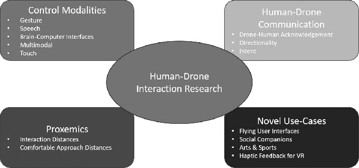
Exploring more Intuitive Gesture Control
(Tezza & Andujar, 2019) focalise on innovative methods to interact with drones, including gesture, speech, brain-computer interfaces, and others (Figure [hdi:fields]). As drones have different characteristics than ground robots, such as not allowing touch interaction, it is unclear whether existing techniques can be adapted to flying robots. Their user-centric design strategy seeks to understand how users naturally interact with drones.
Computer Vision for UAV Research
With state-of-art computer vision technology, gesture-based interaction is growing and several publications are identified.
| Number | Name | Gesture |
|---|---|---|
| 1 | Help | |
| 2 | Ok | 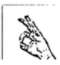 |
| 3 | Nothing | 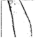 |
| 4 | Peace | 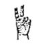 |
| 5 | Punch | 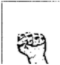 |
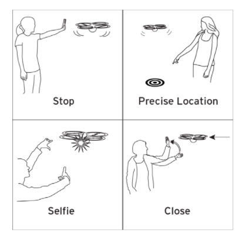
(Cauchard et al., 2015) contribute to an opensource database of body gestures which they test in practice with a drone (Figure [tab:rescue_dataset]). This paper contributes with an outdoor recorded drone video dataset for action recognition, an outdoor dataset for UAV control and gesture recognition, and a dataset for object detection and tracking. These datasets are developed for emergency rescue services, which reveals how critical these applications can be.
(Liu & Szirányi, 2021) explores real-time vision-based Human Drone Interaction with multi-robot systems. To create a team the user focuses attention on an individual robot by simply looking at it, then adds or removes it from the current team with a motion-based hand gesture. Another gesture commands the entire team to begin task execution.
Compared to wearable sensor-based approaches, automated methods for video analysis based on computer vision technology are almost non-invasive. This is beneficial, and even critical, for applications in emergency rescue services.
Pose Recognition Algorithms
As a result, performance becomes application-critical for automated methods for video analysis. This, however, remains a technical challenge. According to (Monajjemi et al., 2013), “Robust real-time hand perception is a decidedly challenging computer vision task, as body parts often occlude themselves or each other (e.g. finger/palm occlusions and handshakes) and lack high contrast patterns (e.g. between fingers).” To respond to this challenge, the Mediapipe framework (missing reference) bases itself on a Machine Learning model, and on techniques for efficient resource management for low latency performance on CPU and GPU.
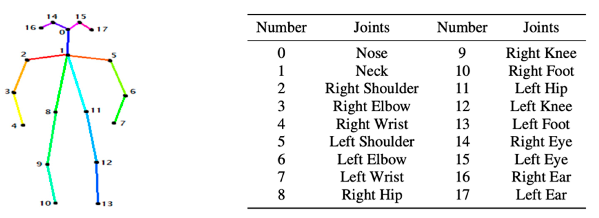
In contrast, OpenPose (missing reference) employs a convolutional neural network to produce two heap-maps, one for predicting joint positions, and the other for partnering the joints into human skeletons. In brief, the input to OpenPose is an image and the output is the skeletons of all the people this algorithm detects. Each skeleton has 18 joints, counting head, neck, arms, and legs. Each joint position is spoken to within the image arranged with coordinate values of x and y, so there’s an add up to 36 values of each skeleton.
Mixed Reality for UAV Research
Simulation systems have long been an integral part of the development of robotic vehicles. They allow engineers to identify errors early on in the development process, and allow researchers to rapidly prototype and demonstrate their idea.
One of the first simulators that could recreate complex worlds in 3D is Gazebo, circa 2004 (Liu & Szirányi, 2021). The difference between Gazebo and different 3D simulation software of that time is that Gazebo was one of the first to focus on resembling the world as realistic as possible for the robot instead of for the human. Immersive robotic simulations can be used to judge the performance of the robot and/or its concept (Hofstede, 2015). In this way, simulators can increase the efficiency and decrease the costs of the development (Larrabee et al., 2013).
The first published definition of Mixed Reality (MR) was given by Milgram and Kishino (Hofstede, 2015) as the merging of physical and virtual worlds. In their definition, Augmented Reality (AR) and Augmented Virtuality (AV) are seen as special instances of MR. In Augmented Reality, virtual objects are projected onto the physical environment, while in Augmented Virtuality, physical objects are incorporated into a virtual environment.
In (Milgram & Kishino, 1994), the definition of Mixed Reality is expanded to robotics by accommodating seamless interaction between physical and virtual objects in any number of physical or virtual environments. It is further demonstrated in (Hönig et al., 2015) that Mixed Reality can reduce the gap between simulation and implementation by enabling the prototyping of algorithms on a combination of physical and virtual objects within a single virtual environment.
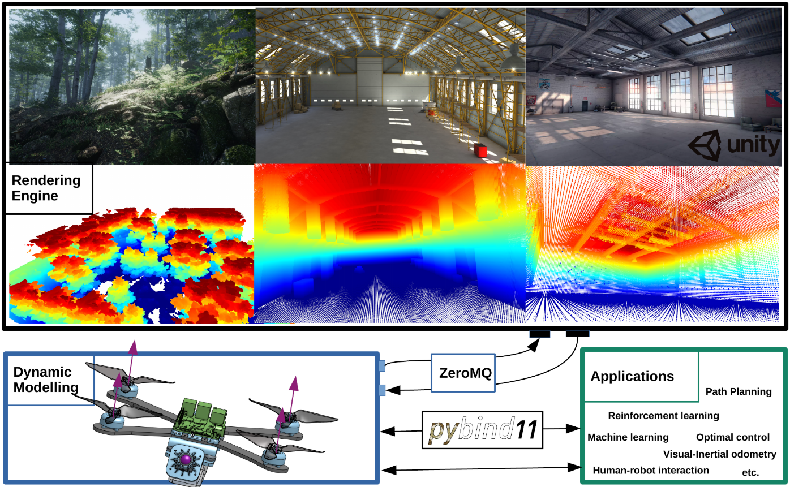
In drone research, immersive simulators have various applications (Phan et al., 2018), of which two are explored here:
Generating exteroceptive sensor data: capturing sensor feeds of the environment for one or more drones simultaneously.
Testing navigation behaviour: Testing flight patterns subject to simulated environment stimuli, prior to real-world deployment.
Generating exteroceptive sensor data
Simulation can be a huge advantage when real robot prototypes or products are not available or cannot be used due to other circumstances. During the development, simulation can be used to assess the basic hardware functionality.
For instance, FlightGoggles is capable of high-fidelity simulation of various types of exteroceptive sensors, such as RGB-D cameras, time-of-flight distance sensors, and infrared radiation (IR) beacon sensors. This example can be extended to multiple sensors simultaneously, leading the way to richer distributed swarm systems.
However, older simulators don’t provide an efficient API to access 3D information of the environment (Hofstede, 2015). To foster research in this direction, Flightmare provides an interface to export the 3D information of the full environment (or a region of it) as point cloud with any desired resolution.
Testing navigation behaviour
Controllers evolved in simulation can be found to be inefficient once transferred onto the physical robot, remains a critical issue in robotics, referred to as the reality gap. the most efficient solutions in simulation often exploit badly modeled phenomena to achieve high fitness values with unrealistic behaviors. This gap highlights a conflict between the efficiency of the solutions in simulation and their transferability from simulation to reality. When deploying to real-life scenarios, there are several challenges (Song et al., 2021):
Optimising the flight control of a UAV. This is relevant with changing payloads, unexpected weather conditions (dust, rain, changing wind), as well as preventive maintenance (motor degradation, battery damage).
Optimising the flight path of a UAV. Several sensor inputs can inform the drone’s flight path and flight speed. This gives several ways to optimise the data acquisition process, from more complex data intakes and various activation/triggering optimisations.
Prior to real-world deployments, different functional elements on a robot can be tested in parallel and reduce development time. For instance, the algorithms for localization, motion planning or control can be tested, improved, and integrated continuously. There are various artificial intelligence algorithms concerned with the thematic of guidance, navigation and control (GNC). A subset of these algorithms is explored in, pertaining to Deep Reinforcement Learning (DRL). These techniques can improve the drone operation as shown in Table [tab:RL_applications].
| Task | Input Observations | Output Actions |
|---|---|---|
| 1. Quadrotor control | [p, θ, v], dim=10 | [c, ωx, ωy, ωz]], dim=4 |
| 2. Control under motor failure | [p, θ, v, ω], dim=12 | [f1, f2, f3], dim=3 |
| 3. Flying through a gate | [p, θ, v, ω, pgate, θgate], dim=18 | [f1, f2, f3, f4], dim=4 |
Current research of drone quadrotor control employs newly architected neural networks and learning time-optimal controllers for drone racing (Azar et al., 2021). This element is largely figured in Flightmare’s (Azar et al., 2021) simulation usecases, and echoes the state of the art research in Reinforcement Learning for UAVs (Song et al., 2021), suggesting that new RL implementations can optimising the flight stability of a UAV as well as new perception pipelines for the navigation of a UAV. Flightmare offers convenient wrappers for reinforcement learning. Those gym wrappers give researchers a user-friendly interface for the interaction between Flightmare and existing RL baselines designed around the gym interface.
Drone Piloting With Gesture
Gestures are the most natural way for people to express information in a non-verbal way. Users can simply control devices or interact without physically touching them. Nowadays, such types of control can be found from smart TV to surgery robots, and UAVs are not the exception.
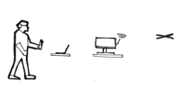
Drone piloting and other control modalities (Azar et al., 2021) make use of various inputs to assist in flight. Perception modules for drone flight usually consist of data-driven models based on multiple sensor modalities. These inputs can be sensor modalities, such as camera, lidar, and radar, published in autonomous-driving related datasets, but also human commands, in the case on drone piloting. In this way, perception pipelines are routinely developed as a realtime interface for sensor data from multiple perception configurations.
As of , multiple gesture interfaces have been developed for UAVs (Tezza & Andujar, 2019) (Liu & Szirányi, 2021), but are lacking in drone piloting. Realtime interfaces for drone piloting are discouraged (Monajjemi et al., 2013) due to high latency and low control precision compared to other drone control modalities. As of , the literature utilizing the Crazyflie nanodrone does not include realtime streaming commands (Tezza & Andujar, 2019).
Overview of Pipeline
A pipeline is implemented to ensure that the right gesture is associated to the right drone command, in real-time and continuously. This pipeline is conceptualised as in Figure [fig:handpipeline].

The Testbed of Chapter [c1] offers a working environment, as well as a command streaming interface between a drone and a companion computer. The focus is therefore on the two first elements: a gesture recognition workflow, followed by a drone control workflow.
Gesture Recognition Layer
In this project, we employ a 3D Pose Estimator, described in the following section, followed by a Gesture Classification Script.
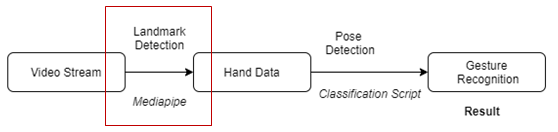
Machine Learning 3D Pose Estimation

MediaPipe Hands (“Published Research That Makes Use of the Crazyflie Drone (Accessed 17 September 2021),” 2021) is a high-fidelity hand and finger tracking solution. It employs machine learning (ML) to infer 21 landmarks of a hand from just a single video frame.

Precise key-point localization of 21 3D hand-knuckle coordinates remain inside the detected hand regions. This allows us to have the spatial position of each of the joints of a hand using only a normal camera.
Whereas current state-of-the-art approaches rely primarily on powerful desktop environments for inference (missing reference), MediaPipe Hands achieves real-time performance on a mobile phone, and even scales to multiple hands, making it an ideal solution for real-time pose tracking.
The desired gesture is hardcoded by its absolute position. For example, if Figure 1’s landmark 8 is below the landmark 5, it can be interpreted as closing your index.

Gesture Classification Script
 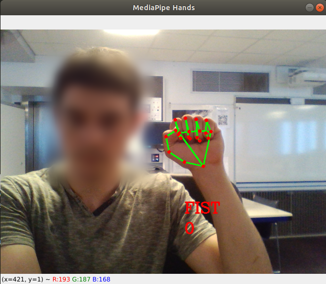 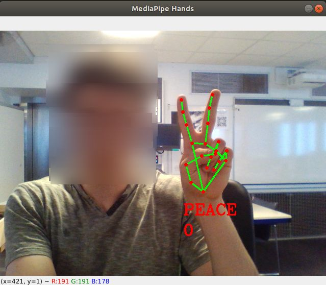
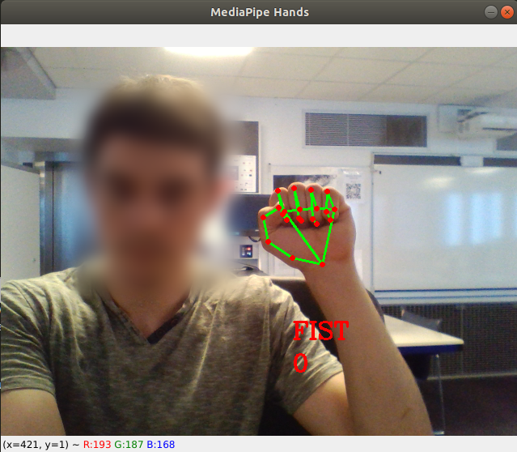 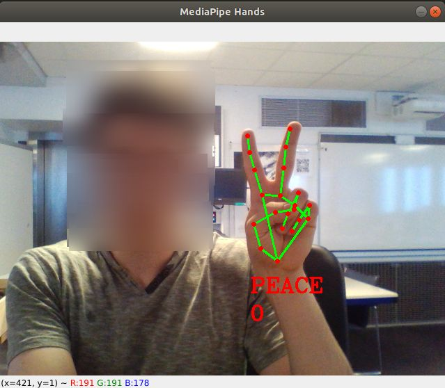
While the model is precise in landmark detection, there are false detections of gestures due to marginal cases. A special buffer is used to filter the most frequent gesture on a sliding window (for every 10 detections). This helps to remove glitches or inconsistent recognition.
Drone Control Layer
Using a live gesture recognition module, a system is designed for streaming commands to be sent to the drone.

Note that the critical information flow between the components of the system is unidirectional. Bidirectional communication, e.g. telemetry from the vehicles, is supported, but is not required for controlled operation. All communication is done in a distributed, one-way manner, such that the gesture recognition workflow is not affected by the drone listener and there is no reliance on high-level code to keep track of the various components, preventing unnecessary interdependence. The Gesture-to-Command script decrypts the messages encoded into a custom ROS message. This workflow serves as a fallback during experiments and demonstrations.
Message passing between applications
The following message is passed via a ROS topic (TCP/IP message). It is then depacketized upon arrival.
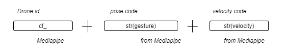
Mode Selection

The following element in the drone control layer is the selection of an adequate mode.
Flight Mode 1: Position Update Mode. This mode moves the drone translationally in three axes based on an absolute position.
Flight Mode 2: Velocity Update Mode. This mode moves the drone according to inputted velocities.
In each mode, the drone can move up, down, left or right. The following hand gestures are associated with these directions.
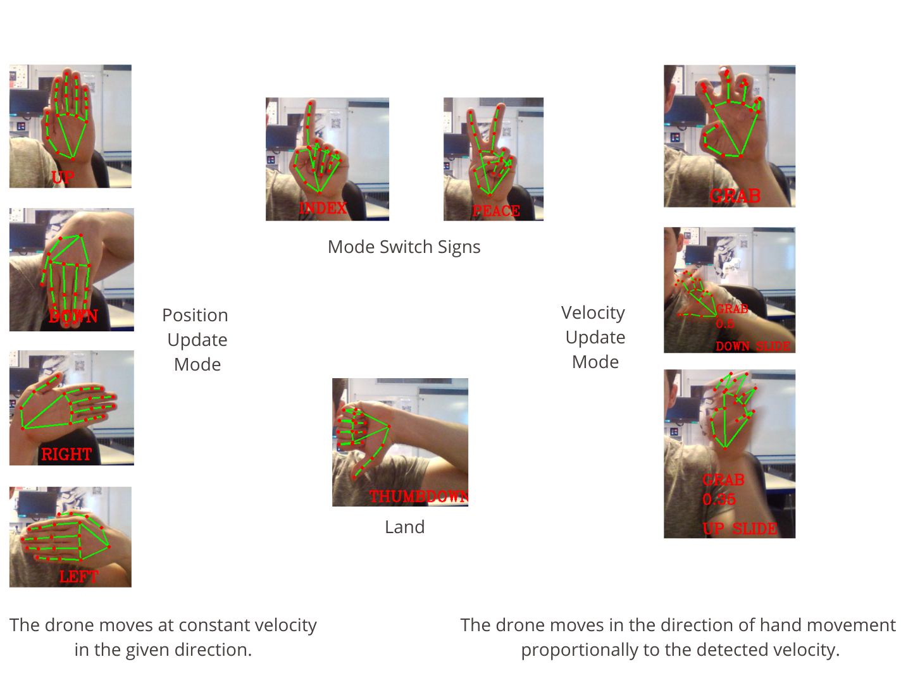
Velocity Filter

The velocity filter serves as a safety measure during development and demonstrations. Given a drone’s position in the Flight Arena, it attributes a particular value between 0 and 1. This value is then multiplied to the velocity value determined from the gesture movement.
The shape of this Velocity Filter was defined using an ellipsoid, with a near constant velocity within the ellipsoid and a sigmoid on the boundaries of this shape. An initial volume is designed on [equation:ellipsoid].
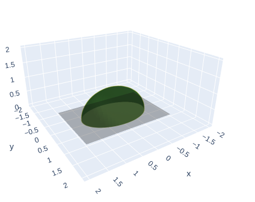
$$A_{1} = \frac{x^2}{a^2} +\frac{y^2}{b^2} +\frac{z^2}{c^2} \text{ with } (a, b, c) = (1.35, 0.85, 1.1) \label{equation:ellipsoid}$$
This figure is scaled according to constants (a, b, c). They are determined empirically by measuring the furthest distance measured by the motion capture. This ellipsoid is then transformed to better approximate the required filter.
A2 = α * ((1−A1)−β) with (α,β) = (18,0.3)
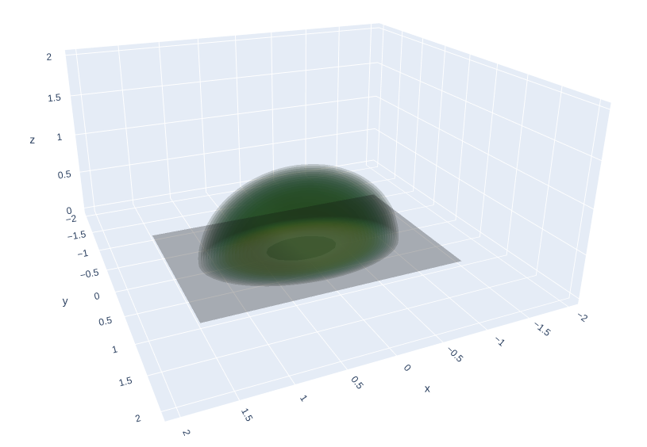
The volume is scaled up by α and shifted down by β. Determining the α and β scaling parameters, leading to the shape in Figure [fig:vel2].
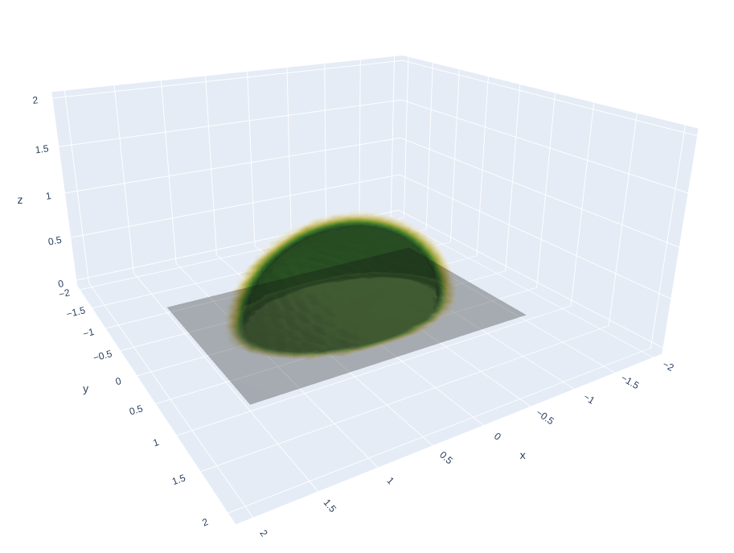
$$A_{3} = \frac{1}{1+e^{-A_{2}}} \label{equation:sigmoid}$$
A logistic regression allows for a smooth speed transition at the limits of this volume.
Gesture Speed and Angle

Hand movement is separated into angle and speed. As the hand moves in a specific direction on the screen, the components of that vector can be used to calculated the speed and angle of the drone’s movement. To help smoothen the output velocity, the mean pixel distance is taken over a rolling window.
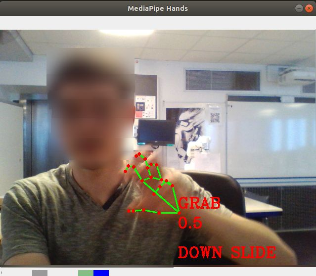 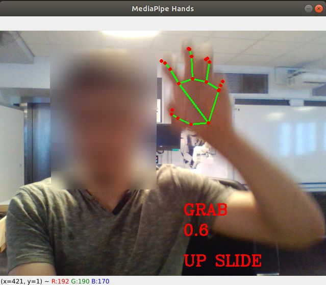 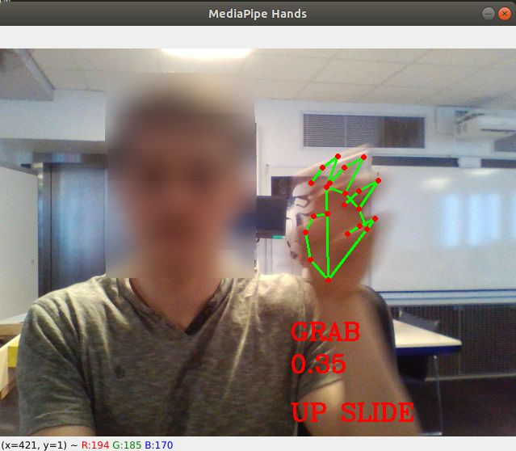
Using these key landmarks, it is possible to discern hand poses and develop a library of drone-piloting hand signals. These are programmed accordingly in the Experimentation Section.
Performance Analysis
Aim
We put in place a demonstration for flight piloting in real-time using the developed gesture interface. We present the workflow of real-time gesture piloting pipeline and we evaluate it in terms of:
System response time
Accuracy of gesture recognition
Evaluation Techniques
System Response Time
The system response time is verified by applying a series of rapid maneuvers to register any significant delays between the pilot’s commands and their execution by the flight control system. Similarly, (Liu & Szirányi, 2021) choose to modify the drone’s angle in a specified direction. This choice is arbitrary and the changes in velocity are used in this case.The input was a demanded velocity in a specified direction. The input was changed randomly by the operator with hand movements, using the workflow described in this chapter. The output was a delay of the velocity change in the drone. Finally, a system response time is determined by averaging the response delays over the experiment.
Gesture Recognition Effectiveness
In order to evaluate gesture recognition performance, we identify the false positive and negative rates of the pose detection, to compare with existing research in real-time gesture detection. In comparison, (Waliszkiewicz et al., 2020) evaluates the false positive and negative rates of the pose detection by manually identifying both the incorrectly recognised gestures, and the unrecognised gestures. Similarly, we identify the false positive and negative rates of the pose detection, but instead of doing it manually, we examine any discrepancies in the UAV’s trajectory flight. Any inconsistencies in recognition are considered false positives.
Methodology for Piloting Operation
We design our experiments for an operator to guide the drone in an intuitive way through hand commands.
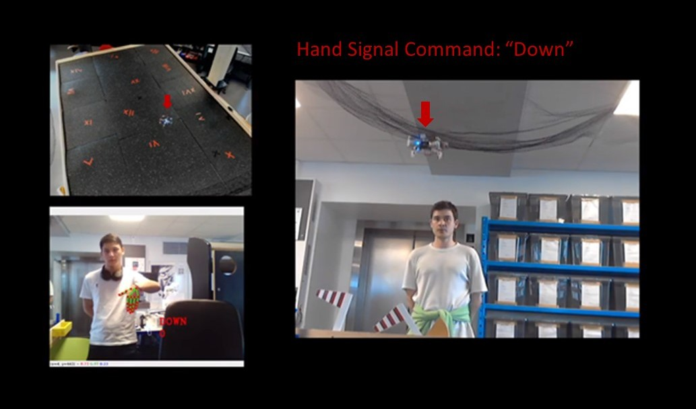
Dataset The experiment was filmed from three angles, and a presentation video is uploaded on Youtube (Bolin et al., 2017). The results were saved in a rosbag format on Google Drive (Carstens & Richalet, n.d.). The data that is examined extends from 11:19:20 to 11:20:30 on July 29, 2021.
Throughout this procedure, data is collected as a rosbag, a self-contained file for recording ROS nodes and topics. In post-processing, we timestamp the hand signal stream. This file is available at (Carstens & Richalet, n.d.) and contains:
The poses of the drone, ordered by timestamp: /tf topic.
The hand gesture message contents: /hand_signal topic.
Results
Overview of Results The two flight regions were plotted separately. The trajectory is plotted on 3 planes. The drone’s trajectory is first plotted on the X-Z plane (as per Figure [fig:refframe1]). The two flight regions are separated by locating the transition gesture’s timestamp.

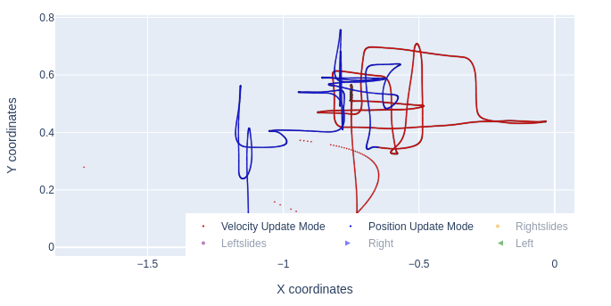
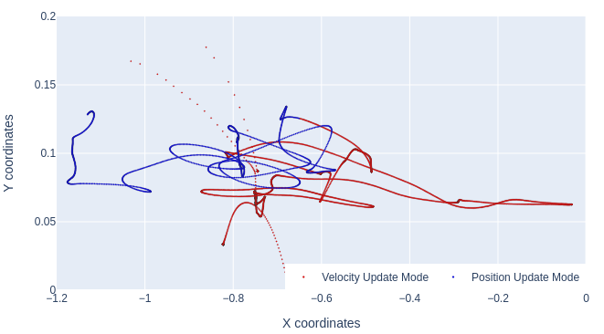 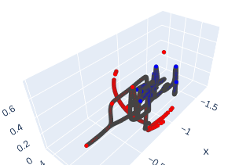
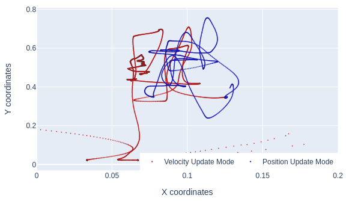
Gesture Recognition Effectiveness In preparation for this evaluation, we label the drone positions where each hand signal is detected. Figure [fig:command_labels] superposes the drone’s trajectory and the hand gestures identified at that particular point on the drone’s path.
Flight Timeline with Annotated Hand Signs
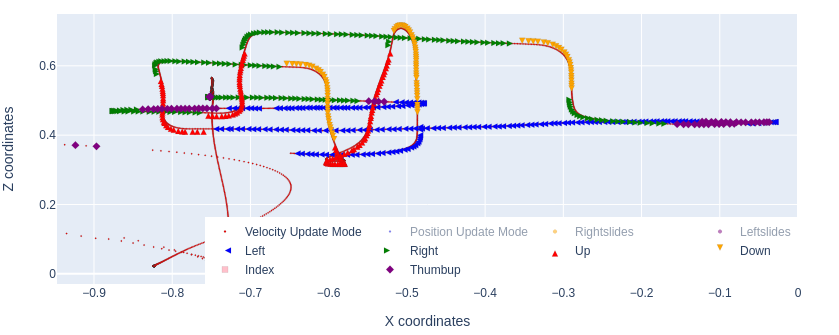
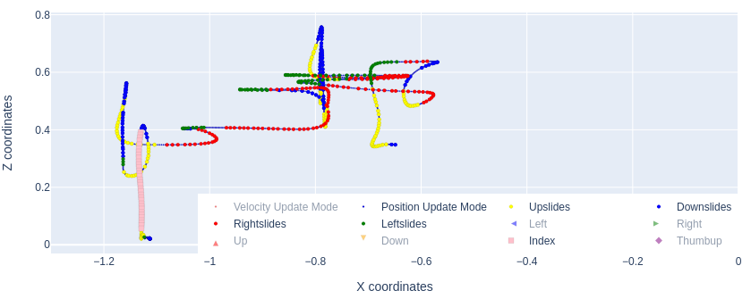
The detection of hand gestures is found to be mostly continuous. Using the methodology outlined earlier, the false positive and false negative rates can be determined.
| Criteria | RIGHT | LEFT | UP | DOWN | THUMBUP |
|---|---|---|---|---|---|
| len | 342 | 280 | 150 | 87 | 201 |
| False Positives | 5 | 33 | 3 | 6 | 201 |
| False Negatives | 30 | 175 | 10 | 5 | 0 |
| Accuracy (% correct) | 89.7 | 25.7 | 93.33 | 87.35 | 0 |
| Criteria | INDEX | PEACE | THUMBDOWN | TOTAL |
|---|---|---|---|---|
| len | 192 | 131 | 100 | 1483 |
| False Positives | 15 | 6 | 100 | 369 |
| False Negatives | 23 | 36 | 0 | 299 |
| Accuracy (% correct) | 80.2 | 67.94 | 0 | 56.3 |
Looking at the graphs, it seems that left and down gestures are quite regularly mistaken for one another. In contrast, gestures are different enough (such as right and index) are recognised at 90%.This demonstrates an interesting limitation in the pipeline’s design: the recognition seems stumble between two similar gestures.
The effectiveness is averaged as the total percentage of correct gestures over the full dataset. The accuracy is determined as of the full gesture dataset.
System Response Time In preparation for this evaluation, we to plot the speeds at which the poses are streamed, as well as the desired speed transmitted from the gesture script. The velocities of the actual drone are calculated as per Equation [eq:speeds] from successive pose data points over the period of interest.
Δx = xf − xi and similarly for Δy, Δz
$$v^* = \frac{\delta u}{\delta t} = \frac{\sqrt{\Delta_{x}^2 + \Delta_{y}^2 + \Delta_{z}^2}}{t_f - t_i} \label{eq:speeds}$$ This calculation is a simplification given the pose data has a stable 120 ± 0.4 Hz transmission frequency, which is ascertained during the experiment (Figure [fig:frequency_check]).
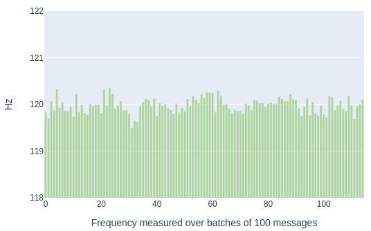
Figure [fig:velocities] plots the drone’s position and its associated velocity in Position Update Mode (blue) followed by Velocity Update Mode (red).
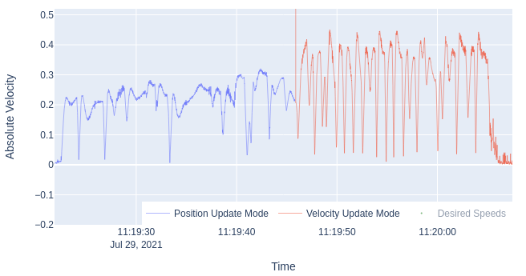
The red graph is significantly more jaggered. This is expected since the velocity updates depend on fast moving hand movements. In Figure [fig:responsiveness], we take a closer look at the interactions between a drone’s trajectory and the signs identified at that particular instance. The velocity commands (in green) are plotted alongside the drone responses (red).
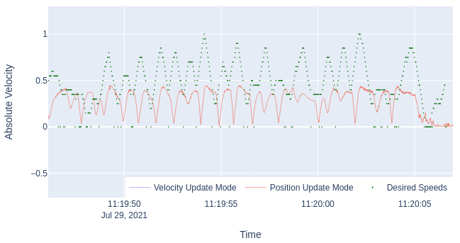
The system response time is determined from Figure [fig:responsiveness] by locating specific spikes of velocity change, in the velocity command stream, and locating spikes of velocity change in the drone flight stream. Their timestamps are recorded in Table [tab:velocity_latency].
| Points | 1 | 2 | 3 | 4 | 5 |
|---|---|---|---|---|---|
| Velocity Command | 19.49.636 | 19.50.2053 | 50.4723 | 51.3419 | 52.2437 |
| Velocity Response | 19.9789 | 19.568 | 50.728 | 51.6482 | 52.5579 |
| Duration of Latency | 342.9 | 362.7 | 255.7 | 306.3 | 314.2 |
| Points | 6 | 7 | 8 | 9 | 10 |
|---|---|---|---|---|---|
| Velocity Command | 53.753 | 54.7583 | 55.3996 | 56.4005 | 57.6692 |
| Velocity Response | 53.9478 | 54.898 | 55.6579 | 56.6375 | 57.9679 |
| Duration of Latency | 194.8 | 139.7 | 258.3 | 237.0 | 298.7 |
The average latency is found to be from the average latency of 10 points. This latency remains rather consistently between 200 and 300 ms, which demonstrates stability over time. We can perform a cross-validation this result with a visual check: we superpose the graphs by eye to determine an approximate value (Figure [fig:response_shift]).
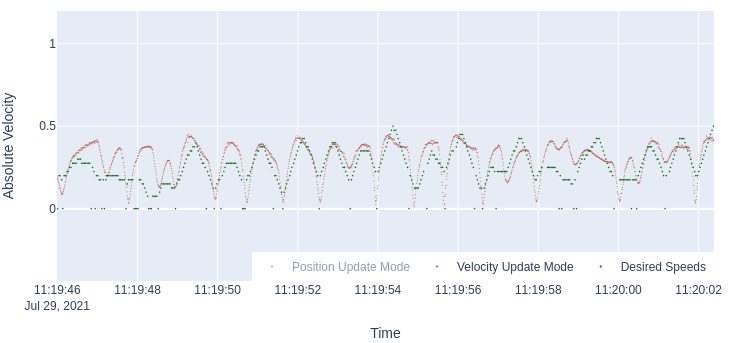
To create this superposition, we shift the second graph by a difference of 250ms. This agrees with the experimental latency of 200-300ms.
Discussion

While Chang Liu et al. focus on outdoor datasets for single large drones, this work looks towards interacting specifically on the drone’s position. Such a specific usecase of hand-following seems to be relatively rare in the literature. In fact, Tezza et al. (Carstens & Richalet, n.d.), despite their survey of the research field, remain sceptical as to whether this method might be the best approach to applications that require fine and precise control, as they pose the problems of higher latency and lower accuracy than other methods such as a remote controller. This vision is coerced with other members of the HDI community, and most datasets focus rather on signaling events to the drone, instead of direct piloting (Figure [tab:rescue_dataset] from (Tezza & Andujar, 2019)). .
| Model | Pixel 3 | Samsung S20 | iPhone11 | ||
|---|---|---|---|---|---|
| Light | 6.6 | 5.6 | 1.1 | ||
| Full | 16.1 | 11.1 | 5.3 | ||
| Heavy | 36.9 | 25.8 | 7.5 |
This performance analysis has measured the pipeline latency is evaluated at 270ms. This is in large part thanks to MediaPipe Hands algorithm (Liu & Szirányi, 2021). This algorithm is relatively new, and demonstrates real-time inference capabilities, with a maximum inference of 36ms for hand landmarks (as shown in Figure [fig:mediapipe_alone]). This performance is evidently far different from that of the perception pipeline developed here around the Mediapipe framework, with different equipment.
This experiment has offered a way to approach hand-drone interaction. Other approaches can offer a fuller exploration of the operator’s ease in controlling the drone, by examining the frequency at which different hand signals are used. As the operator controls the drone by sight, it is possible for them to make minute readjustments. As a result, further research could examine the role of intuition within this gesture loop. It might also be possible to explore instances where the operator does not look at the drone. Without visual feedback, this could give better hints as to the controller’s effectiveness subject to clear hand commands.
Regarding the Thesis
In creating better service drones, one might wonder if a piloting system is an effective means to research and development. It could easily help manage swarms of drones, but is drone development the type of research that requires the operator to make split-second decisions? After all, certain tasks require split-second reactions: drones doing free-fall recovery for instance. Perhaps it could be the beginning of an era of drone real-time learning, where drones can develop functionalities more rapidly than before, through kinetic means. Figure [fig:selfie] is taken from the DJI website, and shows a gesture instruction for a drone to take a picture. Perhaps functionalities like this can become more natural, more closely coupled with human behaviour.
Summary
The gesture interface used to pilot the drones is given 56% accuracy. While the pipeline is based on MediaPipe Hands, the pose classification was hardcoded, and the software can then be improved with a neural classifier or an ML pipeline. In practice, the errors were filtered out by the drone control pipeline.
Mixed Reality Interface
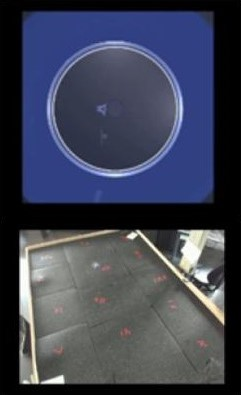
Drone piloting and other control modalities (missing reference) make use of various inputs to assist in flight. Perception modules for drone flight usually consist of data-driven models based on multiple sensor modalities. These inputs can be sensor modalities, such as camera, lidar, and radar, published in autonomous-driving related datasets, but also human commands, in the case on drone piloting. In this way, perception pipelines are routinely developed as a realtime interface for sensor data from multiple perception configurations.
A mixed reality interface serves to enable data transmission between a physical drone and its virtual equivalent. This section documents the design of a mixed reality environment (Figure [fig:reality_interface]). The first objective of the simulated environment is to serve as a graphical interface in order to develop tasks otherwise too difficult to deploy. The priority of the virtual reality is therefore set on rendering capabilities, and the ability to obtain camera streams from this environment.
Selected modules and technologies
This section is a brief mention of all the platforms, systems, services, and processes this interface depends on.
Unity3D (Tezza & Andujar, 2019) is a popular game engine which offers a simulated environment. It is set up as the virtual companion to the Flight Arena. Unity is well suited since it enables high-fidelity graphical rendering, including realistic pre-baked or real-time lighting, flexible combinations of different meshes, materials, shaders, and textures for 3D objects, skyboxes for generating realistic ambient lighting in the scene, and camera post-processing (Nicholas Francis & Helgason, 2018).
ROS Sharp (Song et al., 2021) is a set of open source software libraries and tools in C# for communicating with ROS from .NET applications, in particular Unity.
ROS (Bischoff, 2019) is a set of software libraries and tools that assist in building robot applications.
For the sake of replicability, the version of each module is documented in the references.
Conceptual Overview
The link between the real and the mixed reality is designed with the following core capabilities:
Transmitting the pose of a real drone into a virtual environment.
Transmitting an event between the physical and the virtual environment.
For instance, a drone collision with a virtual object would have the following workflow (Figure [proposed_workflow]).
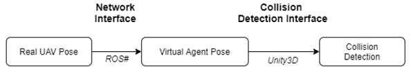
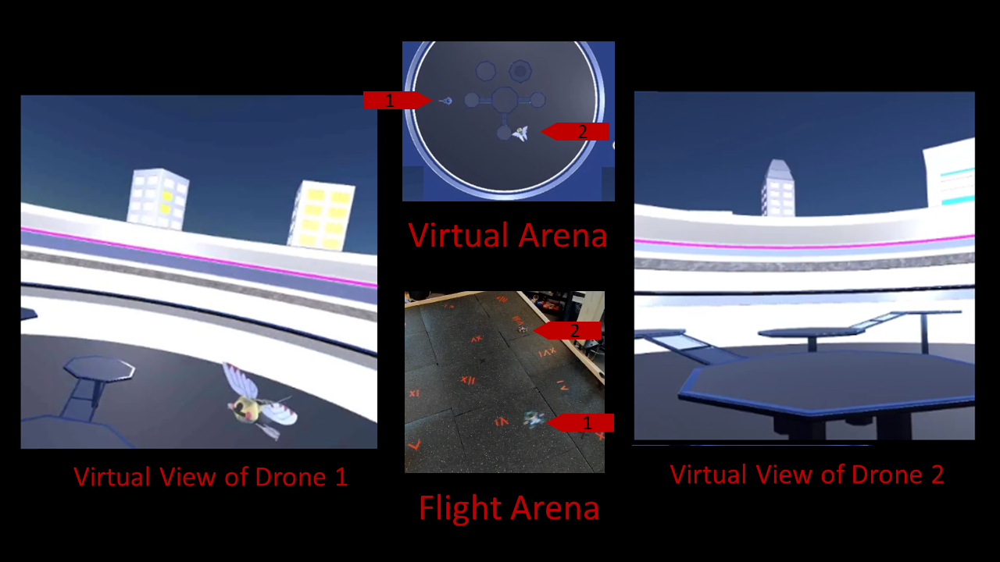
The process of transmitting the pose of the drone to the simulator is referred to as pose injection. This is done via the Network interface, from ROS to the simulator. The process of collision occurs in the simulator, between the injected pose, and a virtual body. This is done via a collision interface within Unity.
These two elements can be readapted to a variety of event-driven scenarios. For this reason, a mixed reality setup offers inexhaustive resources to drone development.
Overview of System Network Interfaces
In order to establish a two-way mixed reality interface, the simulator and the robotics backend are configured to communicate to each other.
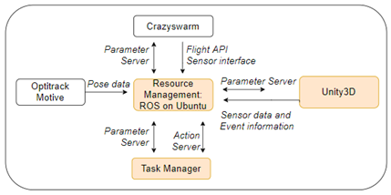
To return to the System Network Layout (Chapter [c1], Figure [fig:network_reference]), the Mixed Reality Interface involves Unity3D as well as the Task Manager.
Event Sharing Workflow
A Network Interface for Mixed Reality Event Sharing
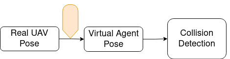
A Network Interface is used for the two objectives: injecting pose messages into the game engine and retrieving event data to be sent to the ROS Task Manager.
Collision Detection in the Virtual Environment
The virtual environment is a Virtual Arena. A particularity of this arena is that it is 3 times larger than the actual flight arena. In other words, the drone’s recorded position differs from the real arena by a factor of 3, and the drone’s velocity also differs by 3. The two agents are also embodied by virtual characters, annotated as 1 and 2 in the visual below. Video feeds (Figure [fig:video_feed]) show the perspectives of both agents, and these are recorded as part of the experiment.
An Event Stream Using this Network Interface
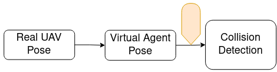
An Event Detection is triggered within the game engine when a particular condition is met, and it then publishes the corresponding message.
The Message Stream communicates the event data using ROS Messages (Stanford Artificial Intelligence Laboratory et al., 2018). ROS messages cater to a variety of sensor formats, from cameras, to pointcloud data, allowing for the ROS backend to make further decisions upon processing this data.
Registering an Event in the Robotics backend
The robotics interface, explored in Chapter [c1], functions on a Task basis. Events that are streamed on the network therefore need to be connected to processes for task rescheduling as well as drone state changes. Using the Topic Monitor from Section [section:SPI], changes in a streamed message can be made to induce state changes which, in turn, affects task management processes.
Until the event reaches the task management interface, the real drone is programmed to fly using Chapter [c1]’s high level interface. The full behaviour of the drone can be visualised as in Figure [collision:sm_design].

This state machine functions for a single drone: using the swarm building blocks developed in Section [section:SPI], the real drone to move to certain waypoints indefinitely. When a virtual collision is detected by the robotics backend, it induces a state change. The next state loads a custom trajectory on the drone, which is executed, before returning to an its looping trajectory.
In the next section, an experiment demonstrates the proposed workflow with a collision between a drone and a virtual body, and then to examine the performance of such a system.
Performance Analysis
We set up a virtual interface between real and virtual objects in real time. This MR simulation consists of a network interface between a robotics backend (ROS) and virtual environments (Unity3D). Similarly to (“ROS Documentation (Accessed 30 September 2021),” 2021), the pipeline is then evaluated in terms of communication latency for two separate scenarios.
when transmitting parameters into the simulated environment
when transmitting parameters to the robotics backend.
Prediction
Latency of drone pose into a virtual environment

The latency of the pose injection is measured by determining the time difference between the ROS position and the time when it was received by the simulator.
Latency of event from the simulator to ROS

We can answer the performance question by investigating the lag time between the moment of collision and the moment the drone reacts. We choose the moment of a Virtual Collision because it is the ideal moment of a collision between the drone’s virtual avatar, and the bot agent. The collision lag time is illustrated in Figure [collision_lag_time].
Method
The time of different events is recorded as shown in Figure [feedback_loop]. The experiment runs as such:
a single drone is flown in the Flight Arena and it is virtualised as the drone agent.
Likewise, a virtual bot agent flies a trajectory in a game Engine.
When the drone and the bot collide, the drone is designed to react, by flying a pre-programmed spiral trajectory.
Data logger setups


This requires two separate data loggers: the one, monitoring the Unity environment, logs the timestamp and pose upon the virtual collision, and the other logs the timestamp of the drone State Change from within the Task Manager.
Results
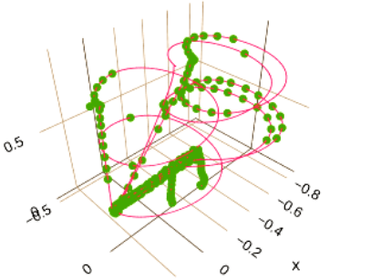
Real-to-virtual Recorded Positions The drone poses are obtained through ROS and the simulator. In Figure [fig:superposition], these posees are superposed. The drone can be seen in green for ROS-times at high-rate sampling (120Hz) and in purple for Unity-times at a lower sampling (10Hz). The positions superpose perfectly. This is expected. This low sampling is sufficient to show the accuracy of the real-to-virtual procedure.
Real-to-virtual Timestamps A second graph examines the differences in timestamps of simulator time (green) relative to ROS-time (red). Figure [fig:pos_time] shows a substantial lag in positions.
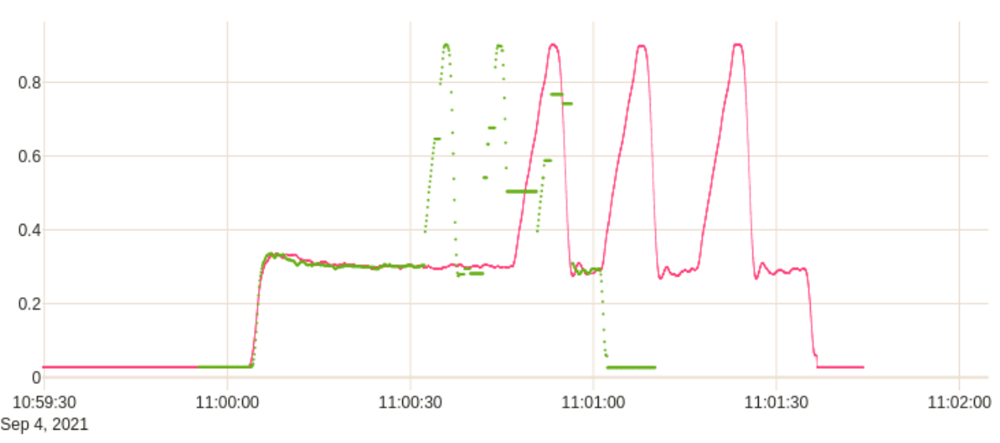
The avatar positions occur "before" real positions. This is due to the logs being based on simulation time, which records events slower than real time. This simulator clock seems to be affected by a system latency.
Latency of Pose Injection We determine the latency of elements when injected into the virtual environment. The latency of the system is associated to the time between simulation and ROS time when recording the same drone pose. The resulting graph is plotted in Figure [fig:xr_poses] and shows a linear trend.
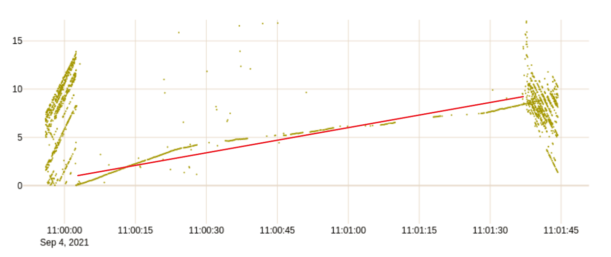
By adapting a linear regression, we determine a gradient of of cumulative latency.
Latency During State Change In order to visualise the event sequence, each collision is assigned a red marker, with the moment of robotics backend state change being assigned a yellow marker. All the collisions are taken from the virtual logs and assigned ROS-compatible timestamps.
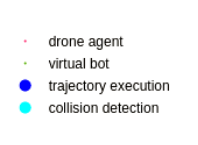
Collision Graphs of the Latency Experiment
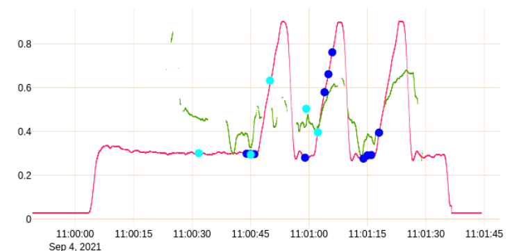
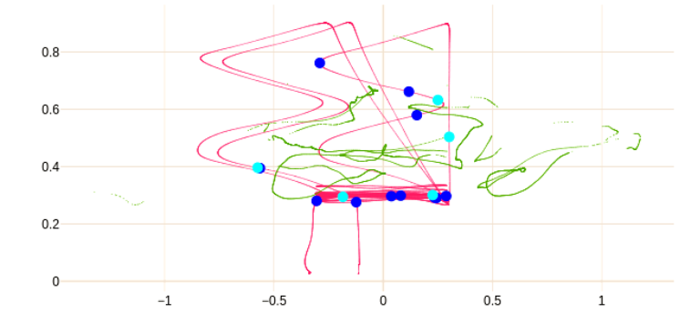
The first plot shows a timeline view, where the moments of start and end of the experiment clearly show a change in Z, on three different occasions. These three collisions are associated to state changes.
These three collisions in particular are investigated, occurring 15 seconds from each other. Each collision latency is calculated according to the method set in the methodology. Figure [fig:latency_collisions_xr] demonstrates a growing lag time that approximates an exponential - a similar performance bottleneck to the previous section.
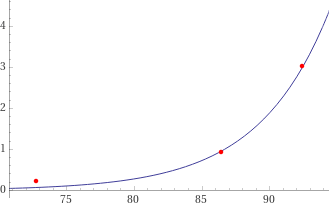
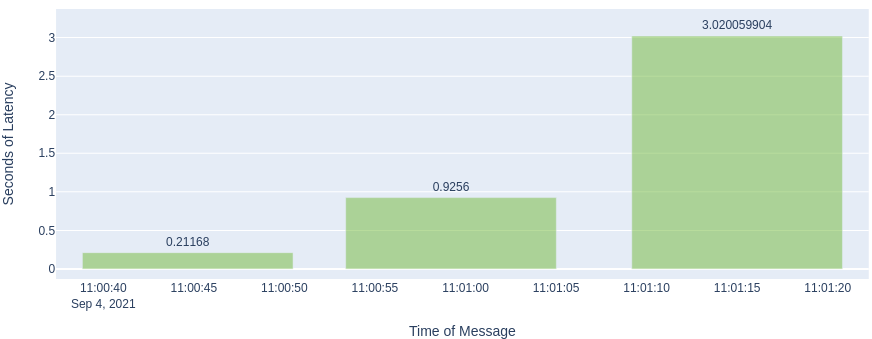
This trendline is modelled after an exponential as follows: Lout = (6.67589×10−8)e0.190664t ms
We can model the full end-to-end system latency as the addition of the latency and the 98t ms above:
Lsystem = Lin + Lout = 89(7.501×10−7e0.190664t+t)ms
Evaluation
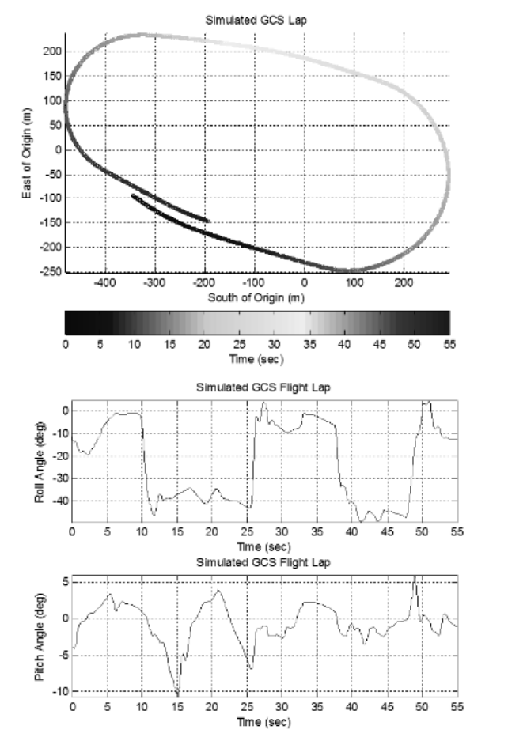
Similarly to the Swarm Application Interface of Chapter [c1], Flightmare offers several tasks as part of their simulator, however they do not undergo tests with real hardware. This discrepancy naturally reflects in the differences in latency, where our system is dependent on a robotics backend on top of a simulator. This chapter can be considered a perception pipeline as opposed to a set of tests that undergo in simulation.
As opposed to simulators with an independent block for the physics engine, this experiment has focused mainly on visualising drone flight. Flight physics modelling is deliberately excluded. This lends itself well to a more photo-realistic, but slower, configuration.
On a functional standpoint, the proposed workflow worked as expected. A virtual body did come in collision a number of times with the drone’s avatar; through event data, the drone has reacted accordingly. This sequence of events was ensured by the choices of software architectures.
To respond to the performance question, we focus on the three key aspects highlighted in the Mixed Reality literature review:
Fast prototyping of new environments: programmability.
A wide suite of sensors and of physical effects: variability.
A true-to-reality physical environment: the physical model.
While the Mixed Reality Interface provides us with a simulated graphics engine, a communication channel was put in place that would communicate virtual events to the robot swarm. However, the collision experiment has demonstrated a cumulative delay of for a single quadrotor, and this can only increase with larger swarms and more complex manoeuvres. Since latency is a primary measure for image streaming and high performance drone tasks, we suggest the exploration of a network interface more focused on performance, and possibly the integration of existing simulators like Flightmare within the testbed.
| Test Description | Result |
|---|---|
| Gesture Piloting | |
| Gesture Recognition Effectiveness | |
| System Response Time | |
| Mixed Reality Interface | |
| Latency of Pose Transmission | |
| Latency of State Changes | |
| System Latency |
Summary
According to (Kumar et al., 2020), a fully functional GCS provides for research capabilities which cannot be achieved through R/C flight alone. They emphasize Parameter Identification (PID) research as an alternative for flying a UAV by tracking values of flight and performing precise maneuvers. The second emphasis is into "research into new applications of subscale aircraft for otherwise dangerous or long mundane tasks". These goals echo the elements for live performances and flight recording used in our testbed.
Preiss et al. (Larrabee et al., 2013) envision that mixed reality would interconnect a wide variety of physical spaces for collaboration. Humans can work safely within their own physical confines, while their intelligent counterparts can operate in more hazardous environments.
With these new mixed reality tools, Preiss et al. position their robotics testbed as "serving to acclimate end users with autonomous systems". They believe their approach is also well suited for mixed reality prototyping since they "will be able to substitute networking and AI components with alternative implementations", for instance by substituting onboard path finding onto offboard components. They further demonstrate that peer-to-peer networking can better simulate intercommunication between drones. With this, Preiss et al. uphold that mixed reality is a vital addition to better human-drone interfaces.
This chapter demonstrates a similar vision, through the practical means of human-agent interactions. With the data streaming interfaces of this Mixed Reality section, as well as from the Piloting section, this shows that new modalities can be created for autonomous vehicles.
Using the networked approach of events and sensor data, further tasks can be prototyped. This aligns with the goals of better service drones. Using the example tasks developed in the previous chapter, various GNC algorithms can be programmed, developed, and tested on hardware conditions.
This method encompasses a major amount of development on the drone platform. From the development of a custom backend, to the interconnection of a graphical simulator, this completes an ecosystem for research and development. While this work has been in major part, infrastructural, it opens the door to the development and testing of GNC algorithms, for instance Reinforcement Learning algorithms, a common occurrence in recent robotics.
Chapter Conclusion
This chapter presents a streaming architecture for piloting UAVs using a webcam, and various forays into Human-Drone interactions. This architecture, which makes use of the drones’ command architecture, but also of a shared network, has lent itself to integrating various inputs – in this case webcam images. The output of this exercise is evident in the precision of the drones’ movement, as it was noticed in the various visualisations of the data.
However, While the Mixed Reality Interface provides us with a simulated graphics engine, a communication channel was put in place that would communicate virtual events to the robot swarm. However, the collision experiment has demonstrated a cumulative delay of for a single quadrotor, and this can only increase with larger swarms and more complex manoeuvres. Since latency is a primary measure for image streaming and high performance drone tasks, we suggest the exploration of a network interface more focused on performance, and possibly the integration of existing simulators like Flightmare within the testbed.
Using the networked approach of events and sensor data, further tasks can be prototyped. Various GNC algorithms can be programmed, developed, and tested on hardware conditions.
All in all, this work has come to demonstrate that a swarm setup can be rather easily adapted to human-drone research, and despite the performance bottlenecks, it succeeds in providing an end-to-end experience for the pilot, and further work should aid in(Phan et al., 2018) streamlining this.